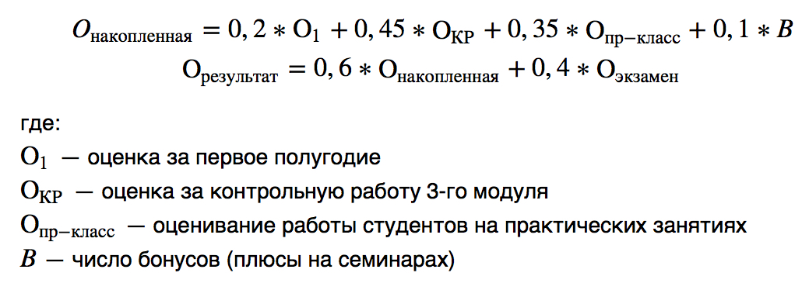
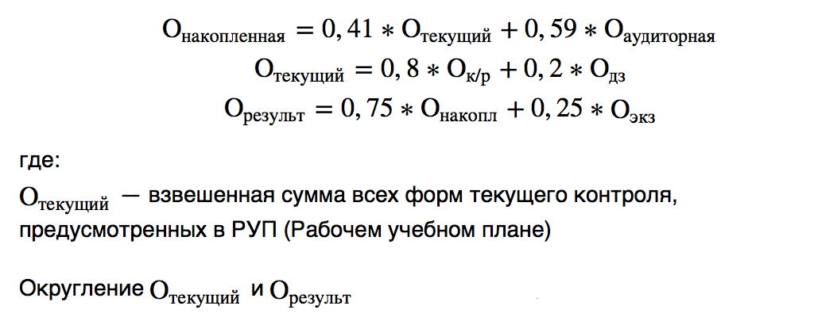
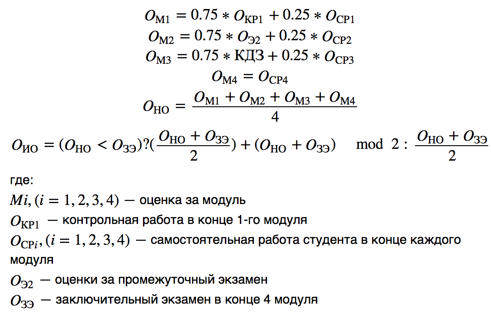
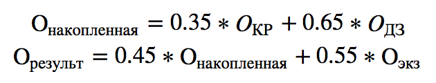
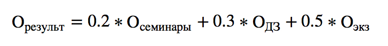

Дедлайн сдачи документов на практику — 23 июня 2017 г.
Технологическая практика — с 03 июля по 15 июля 2017 г.
Алгоритмы и структуры данных — 16 июня 2017 г. *13:40 *(вт)
Статистические и эмпирические методы компьютинга — 19 июня 2017 г. 13:40 (пн) 317 каб.
Операционные системы — 20 июня 2017 г. 10:30 (вт) 317 каб.
12:10 (вт) `317 каб.10:30 (пт)Конструирование программного обеспечения — 24 июня 2017 г. 10:30 и 12:10 (вт) [смотрите распределение по группам в расписании ниже]
Экономика фирмы — 27 июня 2017 г. 13:40 (вт) 317 каб.
14:00 (чт) 402 каб.Майнор — 21 или 28 июня 2017 г. (ср) [индивидуально]
Актуальную информацию вы всегда сможете найти здесь (расписание)!
Для начала вам нужно найти, где вы будете проходить практику (ниже представлен список, с которыми у Вышки заключен договор, или полный список тут).
Если вы выбрали компанию, с которой у Вышки заключен договор и прошли ее тестовые задания, то смело переходите к пункту 7, в ином случае, если вы выбрали компанию не из списка, вам придется для начала подойти к С.М. Авдошину и согласовать с ним заключение договора. Для этого нужно точное наименование компании, ее адрес, ссылка на сайт.
Для того чтобы лишний раз не тратить свое время на отказы, вы можете сами проверить «пригодность» своей компании для практики. Для этого:
Скачать и распечатать 2 экземпляра типового договора, заполнить информацией со стороны компании, а далее, в компании эти 2 экземпляра надо подписать (следите, чтобы подпись соответствовала указанной на первой странице фамилии) и поставить печать.
2 экземпляра подписанного договора принести С.М. Авдошину на визирование (проверку).
Примерно через 7-10 дней забрать в 406 или в учебном офисе один подписанный со стороны НИУ ВШЭ экземпляр и отнести его в компанию.
Номер договора и дату ставить не надо! Договор получит номер при регистрации в НИУ ВШЭ!
После того, как вы закончите дела с договором, вам нужно скачать, распечатать и заполнить заявление.
В заявлении на практику надо указать номер договора.
Примерно через неделю можно передать на предприятие 1 экземпляр подписанного Университетом договора.
Предприятие назначает руководителя практики, который разрабатывает программу практики. Программа должна содержать следующие разделы:
Все программы практик должны быть обязательно загружены в ЛМС в проект Программа практики 2017 до начала практики.
Совет: желательно всю информацию на заявлении, договоре и программе практики заполнять на компьютере, никакой ручки (не считая подписей и печатей), т.к. подобные прецеденты являлись поводом для отказа принятия документов.
Выбрать компанию для практики;
Заключить с ней договор (если она не имеет его с НИУ ВШЭ, в противном случае пропустите этот пункт);
…
Samsung — по условиям компании, практика будет проходить во второй половине июля. Ответственным за практику назначен Шершаков Сергей Андреевич, он же будет проводить отбор среди желающих.

Результат проводится арифметическим способом (когда половина округляется в большую сторону).

проводится арифметическим способом (когда половина округляется в большую сторону).


Результат проводится арифметическим способом (когда половина округляется в большую сторону).

Взято отсюда.
Q: Есть однокурсник, который вскоре собирается открыть своё юр. лицо (веб-студия). Сможет ли он засчитать это за стажировку?
A: Нет, не сможет. Сергей Михайлович проверит компанию на сайте, о котором я говорила на собрании (есть в презентации). Компания без опыта работы и т.п.
Q: Неизвестно ли, как и когда надо будет изъявить своё желание проходить стажировку в компании Samsung и когда она будет проходить?
A: Будет объявление, оно будет разослано всем студентам 2 и 3 курсов ПИ и ПМИ.
Внимание! Если вы стесняетесь подойти к Римме Закиевне, или написать ей, вы можете просто оставить свой вопрос тут.
📝 You can help with the document on GitHub! 👑 Created by Ivan Istomin &